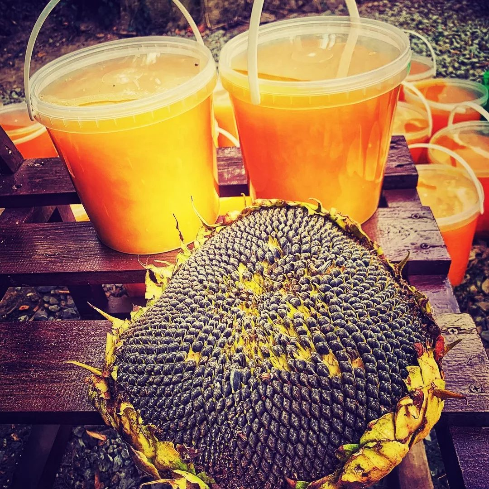

Сезон у нас такой: первой, в начале лета, цветёт акация, потом — разнотравье (всё, что цветёт в поле и в Гуровском лесу), а в августе — подсолнух. Липа даёт нектар редко. Рапс и гречка бывают только тогда, когда рядом их посеяли — это зависит от года.
Случается, что за весь сезон получается лишь одна откачка. Это нормально: мёд — продукт природы, а не фабрики, поэтому сорт и вкус каждый год разные.
